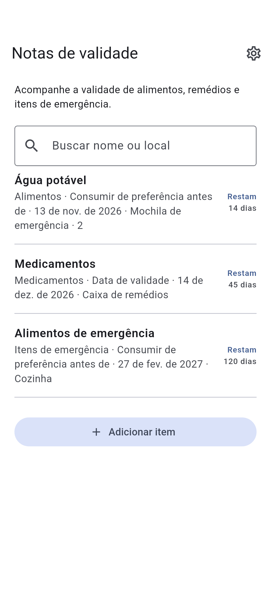

DOTNULL / Notas de validade
Veja os prazos de relance.
Acompanhe a validade de alimentos, remédios e itens de emergência.
Aplicativo em desenvolvimento.
Sobre o aplicativo ↓
HOW IT WORKS
Sobre o aplicativo
01
Adicione nome e data
02
Escolha o tipo de data
03
Veja as datas mais próximas primeiro
Sobre o aplicativo
- Categoria
- Alimentos · Medicamentos · Itens de emergência · Outros
- Local de armazenamento (opcional)
- Buscar nome ou local
- Tipo de data
- Consumir de preferência antes de · Validade · Data de validade
Privacidade
Os registros ficam no dispositivo e podem ser consultados offline.
Os dados podem ser perdidos se o aplicativo for excluído ou o dispositivo falhar.
Seus itens são armazenados neste dispositivo. O fornecedor de anúncios pode usar dados.
Confira a data indicada em cada produto.